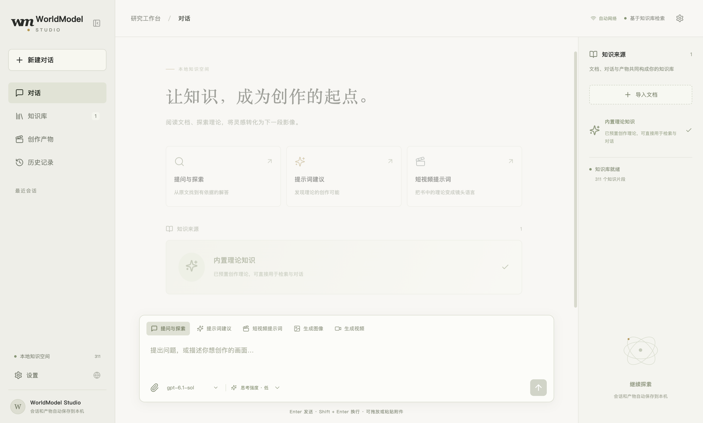

带着来源，理解问题
内置创作理论，也可导入自己的 PDF 和文本。用自然语言提问，沿着引用片段继续探索。
RAG / SOURCE CITATIONSWORLD KNOWLEDGE. HUMAN IMAGINATION.
让理论、对话与灵感，在同一个桌面工作台里，成为有依据的提示词、图像与短片。
macOS、Windows 与 Linux · 自备 ZenMux API Key
THE CREATIVE PROCESS
把理解、构思与制作连接起来，保留每一次探索的上下文。
内置创作理论，也可导入自己的 PDF 和文本。用自然语言提问，沿着引用片段继续探索。
RAG / SOURCE CITATIONS构思提示词、安排分镜、约束动作与光线。所选视频时长会同时影响分镜节奏与口播长度。
PROMPTS / SHOT DESIGN添加参考图，选择比例与时长，生成图像或短片。图片支持平移缩放，产物可复制、下载和继续引用。
IMAGE / VIDEO / REFERENCEA SPACE FOR YOUR NEXT THOUGHT
文档、会话和生成产物共同成为后续对话的知识。置顶值得保留的思考，批量导出历史，删除时同步移除相关检索内容。

需要在设置中输入自己的 ZenMux API Key。模型调用由 ZenMux 计费，具体可用模型与参数以平台为准。应用内可修改模型 ID、名称和媒体协议。
文档、会话和产物保存在本机。回答问题时，检索到的片段会用于远端模型请求。API Key 使用系统加密能力保存。批量删除会同步移除相关知识引用。
应用支持简体中文、英语和日语。新的 AI 回复、提示词建议和创作提示词会跟随所选 UI 语言。